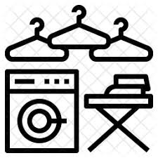

Set Location
First step is to set your location to be linked witha worker near you .

The service
Specify clearly the laundry service you would like to be done for.
Waiting
Patiently wait to be linked to a laundry worker close to you. This should not take long.